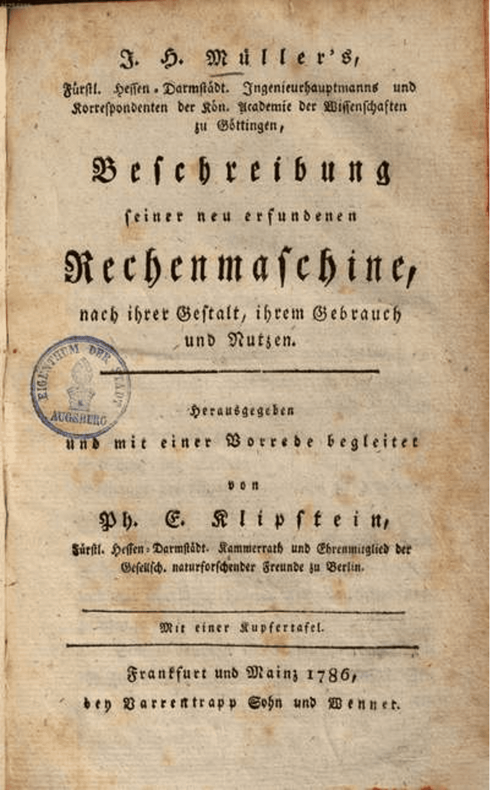
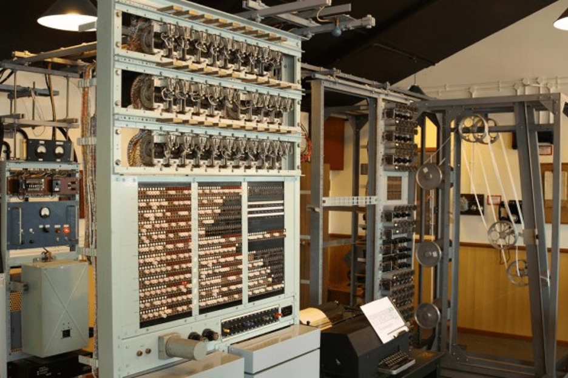

.svg)

.svg)
История компьютеров - от древности до наших дней
Лень — двигатель прогресса. Стремление человечества хотя бы частично автоматизировать свою деятельность всегда выливалось в различные изобретения. Математические вычисления и подсчеты также не избежали научного прогресса. Ещё в Древнем Риме местные «таксисты» использовали аналог современного таксометра — механическое устройство, которое определяло стоимость поездки в зависимости от длины маршрута. Время шло, и к середине прошлого века эволюция вычислительных систем привела к появлению нового типа устройств — компьютеров. Тогда, конечно, их так никто не называл. Для этого использовался другой термин — ЭВМ (электронно-вычислительная машина). Но время и прогресс стерли границы между этими определениями. Так как же прогресс дошел до первых ЭВМ и как они работали?
История развития
Арифмометр
Одно из главных событий в истории развития вычислительных систем является изобретение арифмометра. Арифмометр — это механическая вычислительная машина, предназначенная для выполнения алгебраических операций. Первая схема такого устройства датируется 1500 годом за авторством Леонардо да Винчи. Вокруг его схемы в 60-х годах 20 века возникло много споров. Доктор Роберто Гуателли, работавший в IBM с 1951 года по проекту воссоздания машин Леонардо да Винчи, в 1968 году создал копию счетной машины по эскизам 16-го века.
Данная машина представляла собой 13-разрядную суммирующую машину.
В следующем году вокруг этой машины начали появляться различные возражения, а именно по поводу её механизма. Существовало мнение о том, что машина да Винчи представляет собой механизм пропорционирования, а не счетную машину. Также возникал вопрос и о её работе: по идее, 1 оборот первой оси вызывает 10 оборотов второй, 100 оборотов третьей и 10 в степени n оборотов n-ной оси. Работа такого механизма не могла осуществляться из-за огромной силы трения. По итогу голоса сторонников и противников счетной машины Леонардо да Винчи разделились, но, тем не менее, IBM решила убрать эту модель из коллекции.
Но, оставим наработки Леонардо Да Винчи. Расцвет арифмометров пришелся на 17 век. Первой построенной моделью стал арифмометр Вильгельма Шиккарда в 1623 году. Его машина была 6-разрядной и состояла из 3 блоков — множительного устройства, блока сложения-вычитания и блока записи промежуточных результатов.
Копия арифмометра Шиккарда
Также 17 век отметился ещё несколькими арифмометрами: «паскалина» за авторством Блеза Паскаля, арифмометр Лейбница и машина Сэмюэля Морленда. В промышленных масштабах арифмометры начали производиться в начале 19 века, а распространены были практически до конца 20-го.
Аналитическая и разностная машины Бэббиджа
Чарльз Бэббидж — английский математик, родившийся в конце 18 века. На его счету числится большое количество научных работ и изобретений. Но в рамках данной статьи нас интересуют два его проекта: аналитическая машина и разностная машина.
Идея о создании разностной машины не принадлежит Чарльзу Бэббиджу. Она впервые была описана немецким инженером Иоганном Мюллером в книге с очень сложным названием. До конца не ясно, повлияли ли на Бэббиджа идеи Мюллера при создании разностной машины, поскольку Чарльз ознакомился с его работой в переводе, дата создания которого неизвестна.
Книга Иоганна Мюллера
Считается, что основные идеи для создания разностной машины Бэббидж взял из работ Гаспара де Прони и его идей о декомпозиции математических работ. Его идея заключалась в следующем: есть 3 уровня, на каждом из которых математики занимаются решением определенных проблем. На верхнем уровне находятся самые крутые математики и их задача — вывод математических выражений, пригодных для расчетов. У математиков на втором уровне стояла задача вычислять значения функций, которые вывели на верхнем уровне, для аргументов, с определенным периодом. Эти значения становились опорными для третьего уровня, задачей которого являлись рутинные расчеты. От них требовалось делать только грамотные вычисления. Их так и называли — «вычислители». Эта идея навела Бэббиджа на мысль о создании машины, которая могла бы заменить «вычислителей». Машина Бэббиджа основывалась на методе аппроксимации функций многочленами и вычисления конечных разностей. Собственно, поэтому машина и называется разностной.
В 1822 году Бэббидж построил модель разностной машины и заручился государственной поддержкой в размере 1500 фунтов стерлингов. Он планировал, что закончит машину в течение 3 лет, но по итогу работа была не завершена и через 9 лет. За это время он получил ещё 15500 фунтов стерлингов в виде субсидий от государства. Но всё же часть машины функционировала и производила довольно точные (>18 знаков после запятой) расчеты.
Созданная на основе работ Бэббиджа разностная машина
Во время работы над разностной машиной у Чарльза Бэббиджа возникла идея о создании аналитической машины — универсальной вычислительной машины. Её называют прообразом современного цифрового компьютера, и не зря. Она состояла из арифметического устройства ("мельницы"), памяти ("склада") и устройства ввода-вывода, реализованного с помощью перфокарт различного типа. К сожалению, данная идея осталась лишь на бумаге.
Схема аналитической машины Бэббиджа
Табулятор
История электромеханических машин начинается в 1888 году, когда американский инженер Герман Холлерит, основатель компании CTR (будущая IBM), изобрел электромеханическую счетную машину — табулятор, который мог считывать и сортировать данные, закодированные на перфокартах. В аппарате использовались электромагнитные реле, известные еще с 1831 года и до Холлерита не применявшиеся в счетной технике. Управление механическими счетчиками и сортировкой осуществлялось электрическими импульсами, возникающими при замыкании электрической цепи при наличии отверстия в перфокарте. Импульсы использовались и для ввода чисел, и для управления работой машины. Поэтому табулятор Холлерита можно считать первой счетной электромеханической машиной с программным управлением. Машину полностью построили в 1890 году и использовали при переписи населения США в том же году. Впоследствии табуляторы использовались вплоть до 1960-х — 1970-х годов в бухгалтерии, учете, обработке данных переписей и подобных работах. И даже если в учреждении имелась полноценная ЭВМ, табуляторы все равно использовали, чтобы не нагружать ЭВМ мелкими задачами.
Табулятор IBM
Электромеханические машины времен ВМВ
Следующий виток в развитии вычислительной техники пришелся на Вторую мировую войну. Расчетные машины использовали для атак на вражеские шифры, расчета баллистики и при разработке сложных видов вооружения (авиация, ядерное оружие).
В 1937 году Клод Шеннон в своей работе A Symbolic Analysis of Relay and Switching Circuits показал, что электронные связи и переключатели могут представлять выражения булевой алгебры. Машины тех лет можно условно на два типа: электромеханические (основанные на электромагнитных переключателях) и электронные (полностью на электровакуумных лампах). К первым относились американский Harvard Mark I и компьютеры немецкого инженера Конрада Цузе.
Mark I
Работа над Mark I началась в 1939 году в Endicott laboratories по субподрядному договору с IBM. В качестве основы использовались наработки Чарльза Бэббиджа. Компьютер последовательно считывал инструкции с перфоленты, условного перехода не было, циклы организовывались в виде склеенных в кольцо кусков перфоленты. Принцип разделения данных и инструкций в Mark I получил известность как Гарвардская архитектура. Машину закончили в 1944 году и передали в ВМФ США. Характеристики:
- 765 тысяч деталей (электромеханических реле, переключателей и т. п.)
- Длина — 17 м, высота — 2.5 м, вес — 4.5 тонн
- Потребляемая мощность — 4 кВт
- Объем памяти — 72 числа, состоящих из 23 разрядов (память на десятичных цифровых колесах)
- Вычислительная мощность — 3 операции сложения и вычитания в секунду, 1 операция умножения в 6 секунд, 1 операция деления в 15.3 секунды, логарифм и тригонометрические операции требовали больше минуты.
Mark I
Z3-Z4
В 1936 немецкий инженер Конрад Цузе начал работу над своим первым вычислителем Z1. Первые две модели из серии Z были демонстративными. Следующий же компьютер, Z3, который закончили в 1941, имел практическое применение: с его помощью делали аэродинамические расчеты (стреловидные крылья самолетов, управляемые ракеты). Машина была выполнена на основе телефонных реле. Инструкции считывались с перфорированной пленки. Так же, как в Mark I, отсутствовали инструкции условного перехода, а циклы реализовывались закольцованной перфолентой. Z3 имел некоторые преимущества перед своими будущими собратьями (ENIAC, Mark I): вычисления производились в двоичной системе, устройство позволяло оперировать числами с плавающей точкой. Так как Цузе изначально исходил из гражданских интересов, его компьютеры более близки к современным, чем тогдашние аналоги. В 1944 году практически был завершен Z4, в котором уже присутствовали инструкции условного перехода. Характеристики Z3:
- Арифметическое устройство: с плавающей точкой, 22 бита, +, −, ×, /, квадратный корень.
- Тактовая частота: 5,3 Гц.
- Средняя скорость вычисления: операция сложения — 0,8 секунды; умножения — 3 секунды.
- Хранение программ: внешний считыватель перфоленты.
- Память: 64 слова с длиной в 22 бита.
- Ввод: десятичные числа с плавающей запятой.
- Вывод: десятичные числа с плавающей запятой.
- Элементов: 2600 реле — 600 в арифметическом устройстве и 2000 в устройстве памяти. Мультиплексор для выбора адресов памяти.
- Потребление энергии: 4 кВт.
- Масса: 1000 кг.
При постройке Z4 Цузе просил финансирование на замену электромагнитных реле полностью электронными схемами (лампами), но ему отказали. У электромеханических машин имелось два существенных недостатка — низкое быстродействие и ограниченная износостойкость контактов (не более 10 млн переключений или 120 суток непрерывной работе при 1 переключении в секунду). Дальнейшая история показала, что перспективный путь — это использование электровакуумных ламп.
Вычислитель Z3
Первые ламповые компьютеры
Однозначно определить первый в мире компьютер сложно. Многими учеными определение первого поколения основывается на вычислительной базе из электронных ламп. При этом первое поколение компьютеров разрабатывалось во время Второй мировой войны. Возможно, созданные в то время компьютеры засекречены и по сей день. В целом выделяют два возможных первенца — ENIAC и Colossus
ENIAC
Electronic Numerical Integrator and Computer (Электронный числовой интегратор и вычислитель) или ENIAC создавался по заказу от армии США для расчета баллистических таблиц. Изначально, подобные расчеты производились людьми и их скорость не могла соотноситься с масштабом военных действий. Построен компьютер был лишь к осени 1945 года. Характеристики ENIAC:
- Вес — 30 тонн.
- Объем памяти — 20 число-слов.
- Потребляемая мощность — 174 кВт.
- Количество электронных ламп — 17 468
- Вычислительная мощность — 357 операций умножения или 5000 операций сложения в секунду.
- Тактовая частота — 100 кГц
- Устройство ввода-вывода данных — табулятор перфокарт компании IBM: 125 карт/минуту на ввод, 100 карт/минуту на вывод.
Colossus
Colossus в отличие от ENIAC был очень узконаправленной машиной. Он создавался исключительно с одной целью — декодирование немецких сообщений, зашифрованных с помощью Lorenz SZ. Эта машина было схожа с немецкой Enigma, но состояла из большего числа роторов. Для декодирования этих сообщений было решено создать Colossus. Он включал в себя 1500 электронных ламп, потреблял 8,5 КВт и обладал тактовой частотой в 5.8 МГц. Такое значение частоты достигалось за счет того, что Colossus был создан для решения только одной задачи и применяться в других областях не мог. К концу войны на вооружении Британии стояло 10 таких машин. После войны все они были уничтожены, а данные о них засекречены. Только в 2000 году эта информация была рассекречена.
Реконструированная модель Colossus
Итог
Изобретение компьютеров дало человечеству невиданные ранее возможности вычислений. Во время Второй Мировой войны, конечно, они были использованы в военных целях, но война подтолкнула развитие вычислительных машин, что в дальнейшем окажет огромное влияние на все человечество. Ведь все только начинается.